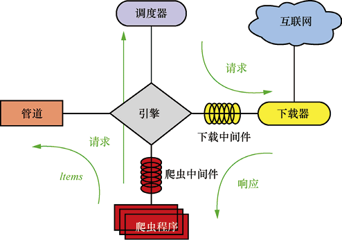
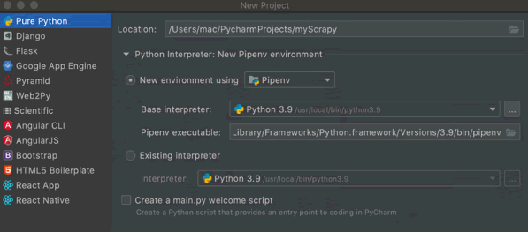
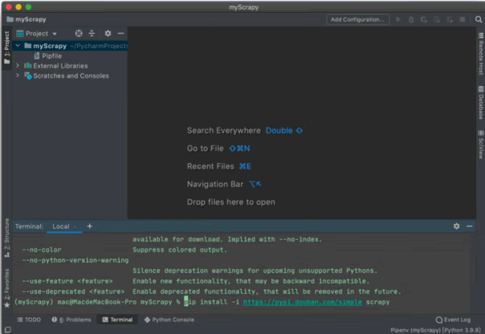
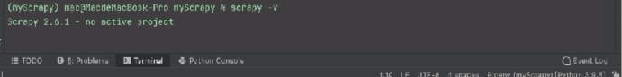
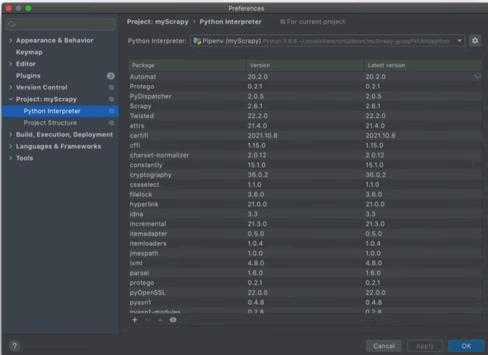
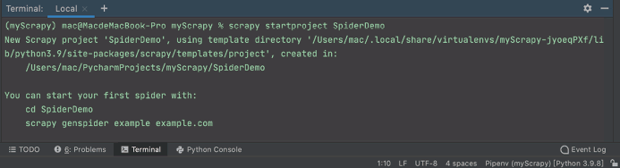
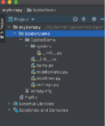
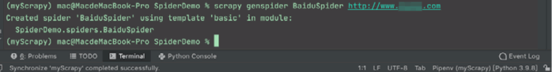
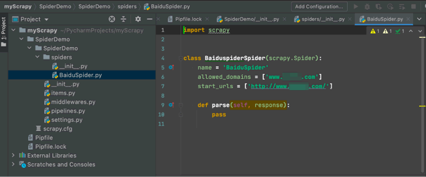

首页 > 编程笔记
Scrapy爬虫框架入门教程（简明版）
如果每次写爬虫程序，都将页面获取、页面解析、爬虫调度、异常处理和反爬应对等功能全部重新实现，会产生很多简单乏味的重复劳动。利用框架，我们只需要定制开发几个模块就可以实现一个爬虫，抓取网页内容和各种图片。
Scrapy 基于多线程，具有如下优点：
Scrapy 涉及五大主要组件，分别是引擎、调度器、下载器、爬虫程序和管道，Scrapy 的组件如下表所示。
Scrapy 的运行框架如下图所示，主要涉及引擎、调度器、下载器、管道等组件。
具体的运行步骤如下：
激活并进入 myScrapy 虚拟环境后，通过 pip 安装 Scrapy，使用命令 pip install -i [Scrapy下载源]，如下图所示，我们可以使用国内的下载源来提高下载安装的速度。
安装完成后在命令行输入 scrapy -v，如果出现下图所示的版本号就说明安装成功。
我们在安装 Twisted、pywin32、Scrapy 这 3 个库的同时可以安装其他的辅助库，如下图所示。注意，不同的第三方库可能需要不同版本的辅助库进行支持，这可能会出现版本纠缠问题，而且问题很难排查，所以建议使用虚拟环境搭建项目以方便项目管理。
接下来，手动初始化项目，进入 myScrapy 目录，输入命令 scrapy startproject SpiderObject，命令行出现下图所示结果说明项目创建成功。
在 myScrapy 目录下会生成文件目录 SpiderDemo 和 Scrapy 框架的 spiders 目录，如下图所示。
最后，简单测试一下，打开 PyCharm 的 Terminal，输入下图所示的命令，生成一个爬虫模板。
成功后，spiders 包下面会多一个 BaiduSpider.py 文件，如下图所示。
这说明我们的爬虫程序创建成功，整个爬虫的框架搭建完成，后续我们可以在 PyCharm 中使用这个框架。
Scrapy 命令行格式如下：
Scrapy 的项目命令如下表所示。
在开发爬虫程序时，调试工作是必要且重要的。无论是开发前的准备工作（例如测试该网站在爬虫程序中是否可用），是下载时的伪装工作（例如为爬虫程序设置请求参数模拟浏览器），还是解析下载的数据（例如使用 XPath 解析等），我们无法每次都运行爬虫程序来达到调试的目的，因为这样效率太低了。我们可以使用浏览器或 Scrapy 命令工具进行调试。
因此，Scrapy项目构建爬虫的步骤主要有 4 步：
下面具体讲解如何构建这 4 个步骤。
Spider 类定义了如何爬取某个网站，包括爬取的动作和如何从网页的内容中提取结构化数据。我们要建立一个爬虫程序，必须用 scrapy.Spider 类创建一个子类，并确定 3 个强制属性和 1 个方法。
示例如下：
yield 是一个类似于 return 的关键字，当迭代遇到 yield 时将返回 yield 后面的值。注意，下一次迭代将从此次迭代遇到的 yield 后面的代码（即下一行）开始运行。带有 yield 的函数不再是一个普通函数，而是一个生成器（generator），可用于迭代。总之，yield 就是一个返回值关键字，它记住了返回的位置，下次迭代将从这个位置后开始。
process_item()方法的参数为 item 和 spider，其中 item 是 Item 对象，即被处理的 Item；spider 是 Spider 对象，即生成该 Item 的爬虫程序。
pipeline 是一个非常重要的模块，主要作用是将返回的 items 写入数据库、文件等持久化模块。当 item 在爬虫程序中被收集之后，会被传递到 Item Pipeline 处理，以决定此 item 是丢弃还是被后续的 pipeline 继续处理。被丢弃的 item 将不会被之后的 pipeline 处理。
使用 pipeline 的注意事项如下：
首先，定义 Item。在 items.py 的 Item 类中定义字段，这些字段用来保存数据，方便后续的操作。
接下来是存储内容，如果仅仅想要保存 item，可以不需要实现任何的管道；如果想将这些数据保存到文件中，可以通过 -o 参数来指定文件名，Scrapy 支持我们将爬取到的数据导出为 JSON、CSV、XML 等格式，具体命令如下：
如果我们想要持久化爬虫数据，可以在数据管道中处理爬虫程序产生的 Item 对象。例如，我们可以通过前面讲到的 openpyxl 库操作 Excel 文件，将数据写入 Excel 文件，代码如下所示。
最后，通过修改 settings.py 文件对项目进行配置，主要需要修改如下几个配置。
所有代码和配置完成后，启动爬虫，命令为 scrapy crawl epubitBook，可以看到正在爬虫，若无报错则表示爬虫成功。
Scrapy简介
Scrapy 是用 Python 实现一个用于爬取网站数据、提取结构性数据而编写的轻量级爬虫应用框架，可以用于数据挖掘、监测和自动化测试。Scrapy 基于多线程，具有如下优点：
- Scrapy 是异步的，性能更强；
- 采用可读性更强的 XPath 代替正则表达式；
- 具备强大的统计和日志系统；
- 可同时在不同的 URL 上爬行；
- 支持 shell 方式，方便独立调试；
- 方便写一些统一的过滤器；
- 通过管道的方式存入数据库。
Scrapy 涉及五大主要组件，分别是引擎、调度器、下载器、爬虫程序和管道，Scrapy 的组件如下表所示。
| 组件 | 作用 | 备注 |
|---|---|---|
| 引擎（Scrapy Engine） | 负责爬虫程序、管道、下载器和调度器中间的通信和数据传递等 | Scrapy 已经实现 |
| 调度器（Scheduler） | 负责接收引擎发送的请求，并按照一定的方式整理排列，放入队列， 当引擎需要时，再交给引擎 | Scrapy 已经实现 |
| 下载器（Downloader） | 负责下载引擎发送的所有请求，并将下载器获取的响应交给引擎，由引擎交给爬虫程序处理 | Scrapy 已经实现 |
| 爬虫程序（Spider） | 负责处理所有响应，从中分析和提取数据，获取 Item 字段需要的数据，并将需要跟进的 URL 提交给引擎，再次进入调度器 | 需要编写该模块 |
| 管道（Item Pipeline） | 负责处理爬虫程序中获取的 Item，并进行后期处理（详细分析、过滤、存储等）的地方 | 需要编写该模块 |
| 下载中间件（Downloader Middlewares） | 可以当作一个可以自定义扩展下载功能的组件 | Scrapy 已经实现 |
| 爬虫中间件（Spider Middlewares） | 可以当作一个可以自定义扩展和操作引擎与爬虫程序之间通信的功能组件（例如，进入爬虫程序的响应和从爬虫程序出去的请求） | Scrapy 已经实现 |
Scrapy 的运行框架如下图所示，主要涉及引擎、调度器、下载器、管道等组件。

图 1 Scrapy的运行框架
图 1 Scrapy的运行框架
具体的运行步骤如下：
- 引擎从爬虫程序拿到第一个需要处理的 URL，并将请求交给调度器。
- 调度器拿到请求后，按照一定的方式进行整理排列，放入队列，并将处理好的请求返回引擎。
- 引擎通知下载器，按照下载中间件的设置去下载请求。
- 下载器下载请求，并将获取的响应按照下载中间件的设置处理，然后交给引擎，由引擎交给爬虫程序来处理。对于下载失败的请求，引擎会通知调度器进行记录，之后重新下载。
- 爬虫程序获得响应，调用回调函数（默认调用 parse 函数）处理，并将提取的 Item 数据和需要跟进的 URL 交给引擎。
- 引擎将 Items 数据交给管道处理，将需要跟进的 URL 交给调度器，然后开始循环，直到调度器中不存在任何请求，整个程序才会终止。
Scrapy框架的使用
1、部署搭建
在本节中，我们将配置虚拟环境、安装 Scrapy，以及在 PyCharm 中部署搭建项目工程。在 PyCharm 中进行 Scrapy 开发环境构建，采用的是 pipenv 虚拟环境，如下图所示。

图 2 Scrapy开发环境构建
图 2 Scrapy开发环境构建
激活并进入 myScrapy 虚拟环境后，通过 pip 安装 Scrapy，使用命令 pip install -i [Scrapy下载源]，如下图所示，我们可以使用国内的下载源来提高下载安装的速度。

图 3 通过pip安装Scrapy
图 3 通过pip安装Scrapy
安装完成后在命令行输入 scrapy -v，如果出现下图所示的版本号就说明安装成功。

图 4 Scrapy安装成功
图 4 Scrapy安装成功
我们在安装 Twisted、pywin32、Scrapy 这 3 个库的同时可以安装其他的辅助库，如下图所示。注意，不同的第三方库可能需要不同版本的辅助库进行支持，这可能会出现版本纠缠问题，而且问题很难排查，所以建议使用虚拟环境搭建项目以方便项目管理。

图 5 安装库
图 5 安装库
接下来，手动初始化项目，进入 myScrapy 目录，输入命令 scrapy startproject SpiderObject，命令行出现下图所示结果说明项目创建成功。

图 6 项目创建成功
图 6 项目创建成功
在 myScrapy 目录下会生成文件目录 SpiderDemo 和 Scrapy 框架的 spiders 目录，如下图所示。

图 7 爬虫项目结构
图 7 爬虫项目结构
最后，简单测试一下，打开 PyCharm 的 Terminal，输入下图所示的命令，生成一个爬虫模板。

图 8 命令行生成爬虫模板
图 8 命令行生成爬虫模板
成功后，spiders 包下面会多一个 BaiduSpider.py 文件，如下图所示。

图 9 创建爬虫代码
图 9 创建爬虫代码
这说明我们的爬虫程序创建成功，整个爬虫的框架搭建完成，后续我们可以在 PyCharm 中使用这个框架。
2、命令工具
在 Scrapy 中，命令工具分为两种，一种为全局命令，另一种为项目命令。全局命令不需要依靠 Scrapy 项目就可以直接运行，而项目命令必须要在 Scrapy 项目中才可以运行。Scrapy 命令行格式如下：
scrapy <command> [options]
Scrapy 的全局命令如下表所示。| 命令 | 使用方式 | 含义 |
|---|---|---|
| startproject | scrapy startproject <project_name>[project_dir] | 创建一个新的项目 |
| genspider | scrapy genspider[-t template]<name><domain> | 创建新的爬虫程序 |
| settings | scrapy settings[options] | 获取配置 |
| runspider | scrapy runspider<spider_file. py> | 运行 Python 文件里的爬虫程序，不需要创建项目 |
| shell | scrapy shell[url] | 启动 Scrapy 交互终端，可用于调试 |
| fetch | scrapy fetch<url> | 使用 Scrapy 下载器下载给定的 URL，并将获取的内容送到标准输出 |
| view | scrapy view<url> | 浏览器中打开 URL |
| version | scrapy version[-v] | 显示 Scrapy 版木 |
Scrapy 的项目命令如下表所示。
| 命令 | 使用方式 | 含义 |
|---|---|---|
| crawl | scrapy crawl<spider> | 使用爬虫程序进行爬取，-o 表示输出 |
| check | scrapy check[-l]<spider> | 检查爬虫程序文件是否有语法错误 |
| list | scrapy list | 列出当前项目可用的所有爬虫程序 |
| edit | scrapy edit<spider> | 使用环境变量中设定的编辑器编辑爬虫程序 |
| parse | scrapy parse<url>[options] | 获取给定的 URL 并使用爬虫程序分析处理 |
| bench | scrapy bench | 运行基准测试 |
在开发爬虫程序时，调试工作是必要且重要的。无论是开发前的准备工作（例如测试该网站在爬虫程序中是否可用），是下载时的伪装工作（例如为爬虫程序设置请求参数模拟浏览器），还是解析下载的数据（例如使用 XPath 解析等），我们无法每次都运行爬虫程序来达到调试的目的，因为这样效率太低了。我们可以使用浏览器或 Scrapy 命令工具进行调试。
1) 浏览器调试
通常使用浏览器开发工具获取请求参数，如显示源码、firebug 等：- 通常我们在浏览器中点击鼠标右键，选择显示网页源码功能，即可获取该URL的网页源码。
- 代码检查可以精确地查看当前选中元素的 HTML 标签。
- 查看请求参数，例如打开代码检查后在 network 标签下，查看请求头 Request Headers。
- XPath 调试是通过 Chrome 浏览器，检查代码后可以在标签上用鼠标右键点击 Copy->Copy XPath。
2) Scrapy命令工具调试
执行命令 scrapy shell［待爬虫的URL］进入Scrapy 终端，可以开发和调试中测试 XPath 或 CSS 表达式，查看他们的工作方式及从爬取的网页中提取的数据。在编写我们的爬虫程序时，该终端提供了交互测试我们的表达式代码的功能，免去了每次修改后运行爬虫程序的麻烦。3、使用说明
Python 爬虫的基本流程主要包括发起请求、解析内容、获取响应内容和保存数据 4 步：- 通过 HTTP 向目标站点发起请求，请求可以包含额外的请求头等信息，等待服务器响应。
- 得到的内容可能是 HTML 对象，我们可以用正则表达式、网页解析库解析；可能是 JSON 对象，我们可以直接转为 JSON 对象解析；可能是二进制数据，我们可以保存或者做进一步处理。
- 如果服务器能正常响应，会得到一个响应，响应的内容便是所要获取的页面内容，类型可能有 HTML、JSON、二进制（如图片视频）等类型。
- 保存形式多样，可以存为文本、存至数据库，或者保存为特定格式的文件。
因此，Scrapy项目构建爬虫的步骤主要有 4 步：
- 新建项目（scrapy startproject xxx）：新建一个新的爬虫项目。
- 明确目标（items.py）：明确要抓取的目标。
- 制作爬虫（spiders/xxspider.py）：制作爬虫，开始爬取网页。
- 存储内容（pipelines.py）：设计管道，存储爬取的内容。
下面具体讲解如何构建这 4 个步骤。
1) 创建Scrapy工程
点击在 PyCharm 底部的 Terminal 窗口进入命令行，默认打开位置为 PyCharm 项目目录下，所以打开它即可输入命令。新建项目命令：scrapy startproject ×××
其中，×××为项目名称,我们可以看到命令执行后会创建一个×××目录。例如执行命令 scrapy startproject SpiderDemo，生成的项目类似下面的结构：
SpiderDemo/
scrapy.cfg
SpiderDemo/
__init__.py
items.py
pipelines.py
settings.py
spiders/
__init__.py
...
2) 明确目标（定义Item）
Item 是用于保存爬取到的数据的容器，其使用方法和字典类似。我们创建一个 scrapy.Item 类，并且定义类型为 scrapy.Field 的类属性来定义一个 Item。然后，实现一个爬取某图书网站的作者、书名和价格的爬虫。在 items.py 的 Item 类中定义字段，这些字段用来保存数据和方便后续的操作：
import scrapy
class BookItem(scrapy.Item):
author = scrapy.Field()
name = scrapy.Field()
price = scrapy.Field()
3) 制作爬虫（编写爬虫程序）
scrapy.Spider 是最基本的类，所有编写的爬虫必须继承这个类。Spider 类定义了如何爬取某个网站，包括爬取的动作和如何从网页的内容中提取结构化数据。我们要建立一个爬虫程序，必须用 scrapy.Spider 类创建一个子类，并确定 3 个强制属性和 1 个方法。
- name：爬虫的识别名称，必须唯一。
- allow_domains：爬虫的约束区域，规定爬虫只爬取约束区域下的网页，不存在的 URL 会被忽略。
- start_urls：爬取的 URL 列表。因此，第一个被获取到的页面将是其中之一。后续的 URL 则从初始 URL 返回的数据中提取。
- parse(self,response)：Request 对象默认的回调解析方法。每个初始 URL 完成下载后调用该方法，将从每个初始 URL 传回的 Response 对象作为唯一参数传入该方法。该方法负责解析返回的数据（即 response.body），提取数据（即生成 item），生成需要进一步处理的 URL 的 Request 对象。
示例如下：
class xxSpider(scrapy.Spider):
name = 'xxspider'
def start_requests(self):
url='http://xxxx.xxxx.xxxx.xxxx'
# 向队列中加入POST请求
yield scrapy.FormRequest(
url=url,
formdata={'version':'2.1' },
callback=self.parse )
def parse(self, response):
print(response.body)
我们可以使用 scrapy.FormRequest(url,formdata,callback) 方法发送 POST 请求。yield 是一个类似于 return 的关键字，当迭代遇到 yield 时将返回 yield 后面的值。注意，下一次迭代将从此次迭代遇到的 yield 后面的代码（即下一行）开始运行。带有 yield 的函数不再是一个普通函数，而是一个生成器（generator），可用于迭代。总之，yield 就是一个返回值关键字，它记住了返回的位置，下次迭代将从这个位置后开始。
4) 编写Item Pipeline（存储）
每个 Item Pipeline 组件都是一个独立的 Python 类，被定义的 Item Pipeline 会默认且必须调用 process_item(self,item,spider) 方法，这个方法必须返回一个包含数据的字典或 item 对象，否则将抛出 DropItem 异常。process_item()方法的参数为 item 和 spider，其中 item 是 Item 对象，即被处理的 Item；spider 是 Spider 对象，即生成该 Item 的爬虫程序。
pipeline 是一个非常重要的模块，主要作用是将返回的 items 写入数据库、文件等持久化模块。当 item 在爬虫程序中被收集之后，会被传递到 Item Pipeline 处理，以决定此 item 是丢弃还是被后续的 pipeline 继续处理。被丢弃的 item 将不会被之后的 pipeline 处理。
使用 pipeline 的注意事项如下：
- 使用之前需要在 settings 配置文件中开启。
- pipeline 在 setting 配置文件中的键表示位置，即 pipeline 在项目中的位置可以自定义；值表示距离引擎的远近，越近数据会越先经过。
- 有多个 pipeline 的时候，process_item() 方法必须返回item，否则后一个 pipeline 取到的数据为 None。
- pipeline 中必须有 process_item() 方法，否则没有办法接收和处理 item。
- process_item() 方法接收 item 和 spider，其中 spider 是当前传递 item 过来的爬虫程序。
Scrapy框架实例
本示例爬虫某图书网站的作者、书名和价格，并把爬虫的结果输出到一个 Excel 文档中。首先，定义 Item。在 items.py 的 Item 类中定义字段，这些字段用来保存数据，方便后续的操作。
import scrapy
class BookItem(scrapy.Item):
author = scrapy.Field()
name = scrapy.Field()
price = scrapy.Field()
接着，新增爬虫程序文件。修改 spiders 目录下名为 BookSpider.py 的文件，它是爬虫程序的核心，需要添加解析页面的代码，我们可以通过解析 Response 对象，获取图书的信息，代码如下所示。
import scrapy
from scrapy import Selector, Request
from scrapy.http import HtmlResponse
from ..items import BookItem
import json
import time
# 通过继承scrapy.Spider创建一个爬虫BookSpider
class BooksSpider(scrapy.Spider):
name = 'epubitBook' # 爬虫的唯一标识，不能重复，启动爬虫的时候要用
allowed_domains = ['epubit.com']
start_urls = [
'https://www.epubit.com/pubcloud/content/front/portal/getUbookList?page=1&row=20&=&startPrice=&endPrice=&tagId=']
def start_requests(self):
# 爬取接口网页连接
web_url = [
'https://www.epubit.com/pubcloud/content/front/portal/getUbookList?page={}&row=20&=&startPrice=&endPrice=&tagId='.format(
page) for page in range(1, 2)]
for i in web_url:
time.sleep(5)
headers = {'Origin-Domain': 'www.epubit.com'}
# scrapy.Request()参数一必须为str
yield scrapy.Request(i, self.parse, headers=headers)
def parse(self, response):
# 将接口中提取的Json数据转为dict字典
bk_dict = json.loads(response.text)
records = bk_dict['data']['records']
for r in records:
item = BookItem()
author = r['authors']
name = r['name']
price = r['price']
# print(author,name, price)
item['author'] = author
item['name'] = name
item['price'] = price
yield item
在上述代码中，parse 方法的参数 response 是对待爬取的链接进行爬取后的结果，在 parse 方法中，我们需要把 JSON 格式的数据转换为字典类型，然后读取需要的字段。本示例通过 page 实现翻页爬取，这样迭代实现整站的爬取。为了让服务器正常处理请求，我们要模拟正常的请求，并添加相应的请求头，如上述代码需要在 scrapy.Request() 函数的参数中设置，否则服务器会返回错误信息，从而无法获得数据。接下来是存储内容，如果仅仅想要保存 item，可以不需要实现任何的管道；如果想将这些数据保存到文件中，可以通过 -o 参数来指定文件名，Scrapy 支持我们将爬取到的数据导出为 JSON、CSV、XML 等格式，具体命令如下：
# JSON格式，默认为Unicode编码 scrapy crawl itcast -o result.json # CSV逗号表达式，可用Excel打开 scrapy crawl itcast -o result.csv # XML格式 scrapy crawl itcast -o result.xml执行这些命令，将会序列化爬取的数据，并生成文件。例如，执行命令 scrapy crawl epubitBook -o result.json，把爬取的数据保存到 result.json 中。
如果我们想要持久化爬虫数据，可以在数据管道中处理爬虫程序产生的 Item 对象。例如，我们可以通过前面讲到的 openpyxl 库操作 Excel 文件，将数据写入 Excel 文件，代码如下所示。
# 在这里定义item管道
# 不要忘了将管道加入ITEM_PIPELINES设置
# 详情可见Scrapy官方文档
from itemadapter import ItemAdapter
import openpyxl
from .items import BookItem
class BookItemPipeline:
def open_spider(self, spider):
# 可选实现，开启spider时调用该方法
self.wb = openpyxl.Workbook()
self.sheet = self.wb.active
self.sheet.title = 'BooksMessage'
self.sheet.append(('作者', '书名', '价格'))
def process_item(self, item: BookItem, spider):
self.sheet.append((item['author'], item['name'], item['price']))
return item
def close_spider(self, spider):
self.wb.save('图书信息.xlsx')
上面的 process_item() 和 close_spider() 都是回调方法，简单来说就是 Scrapy 框架会自动去调用的方法。当爬虫程序产生一个 Item 对象交给引擎时，引擎会将该 Item 对象交给管道，这时我们就会执行完成配置的管道的 parse_item 方法，从而在该方法中获取数据并完成数据的持久化操作。close_spider() 方法是在爬虫结束运行前自动执行的方法，在上述代码中，我们在 close_spider() 方法中实现了保存 Excel 文件的操作。最后，通过修改 settings.py 文件对项目进行配置，主要需要修改如下几个配置。
ITEM_PIPELINES = {
'SpiderDemo.pipelines.BookItemPipeline': 300
}
# Obey robots.txt rules
ROBOTSTXT_OBEY = False
BOT_NAME = 'SpiderDemo.SpiderDemo'
SPIDER_MODULES = ['SpiderDemo.spiders']
NEWSPIDER_MODULE = 'SpiderDemo.spiders'
在 settings.py 文件里添加以上配置（可以取消原有的注释），后面的数字决定 item 通过 pipeline 的顺序，通常定义在 0~1000，数值越低，组件的优先级越高。所有代码和配置完成后，启动爬虫，命令为 scrapy crawl epubitBook，可以看到正在爬虫，若无报错则表示爬虫成功。
关注公众号「站长严长生」，在手机上阅读所有教程，随时随地都能学习。内含一款搜索神器，免费下载全网书籍和视频。

微信扫码关注公众号